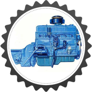
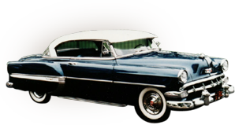
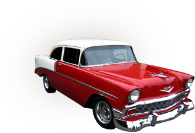
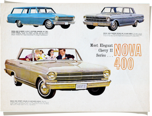
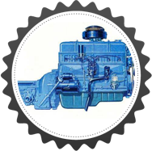
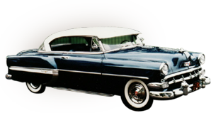
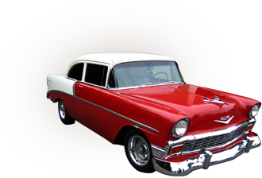
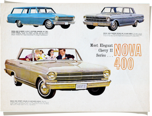

On June 30th, 1953 at an assembly factory in Flint, Michigan, the world of sports cars in America changed forever. Now, fast forward to present day and the Chevy Corvette is still being recognized as one of the leaders in automotive excellence, having just recently winning the 2013 Strategic Visions Total Quality Award.
It all began in the fall of 1951, when General Motors Chief Designer, Harley J. Earl, began rumblings throughout the company about the possibility of developing a sports car that would cost close to what modern Sedans were running at that time, which was about $2,000. This would be a tall order though, as competition would be fierce with other manufacturers like Jaguar, who were busy producing some of the most well-known performance vehicles in the world.
Not too long after the rumblings of the new sports car began throughout GM, a concept car was put together, utilizing some lower cost parts and components to keep the car as affordable as possible. With a fiberglass body and the ability to get up to 150 in horsepower, the first American sports car came to life. At this point though, it needed a good name to go with its sleek appeal and “Bel Air” wheel covers. GM’s Chief Engineer, Ed Cole, stepped up to the task and officially named it a “Corvette.”
The car’s official debut came at the New York Auto Show in 1953. Thousands of people wanted to know just how they could buy the vehicle with the sharp white exterior, red interior and black top. All the cars came complete with a two-speed automatic transmission and what was described as a “blue flame” six-cylinder engine. General Motors made a mere 300 Corvettes that first year of production, with a base price higher than planned at about $3500 each. Buyers didn’t seem to mind, as the cars quickly sold.
Much like a musician may struggle with their second album release; it seemed the Corvette was going to struggle through its second edition as well. Despite offering more exterior color options in red, black and blue, the appeal of the new American sports car had quickly flattened with buyers with the new version in 1954. It seemed the car could not gain the notoriety it desired, mostly because of the sub-par V6 engine still under the hood. Buyers wanted, and expected, the sports car to have a V8 engine. Not to mention the production in 1954 was moved to a Corvette-only manufacturing facility in St. Louis, causing production to ramp up quickly from 300 cars in 1953 up to more than 3600 in 1954. Unfortunately for GM, by the end of the year, 1/3 of the cars remained unsold with many sitting on lots for years to come.
Positive developments continued into 1956 with the unveiling of a new, more visually-appealing body style for the Corvette. It boasted outside door handles, power windows and an optional hard top, not to mention design features like chrome accents and side coves that created a sleek exterior appeal. And under the hood the car finally boasted a three-speed manual transmission, an impressive 210 horsepower along with a 265-cubic-inch V8 engine. It was finally the “dream machine” that the buyers were craving since 1953. It was also the year the Corvette made its debut on the raceway during the Daytona Speedweeks.
The desired changes to the Corvette came in 1962 when General Motors decided to end the C1 generation of Corvettes with some improvements, including a more powerful 360 horsepower engine. The “small block” V8 engine had been enhanced up to 327 cubic inches. Many enthusiasts still believe the 1962 version of the vehicle was the best Corvette ever made. By 1962, the Corvette had solidified its positioning as America’s favorite sports car.
1955 brought big changes though, the Corvette got it’s much needed, “small block” V8 engine. And this time, GM decided to scale back production to just 700 vehicles so they didn’t become the somewhat permanent fixtures in car lots like the year prior. Focused on high-performance and cost-efficiency, the small block Corvette is still known today as one of the most significant developments in automotive engineering.
The 1957 Corvette model was almost a mirror image of the1956, with just minor changes being made to the fuel injection system
In 1958 the body was freshened slightly with a larger front end and exposed front headlamps as well as a full dashboard for easy access for the driver. This trend of minor upgrades continued through ’59, ’60 and ’61.
To create some variety in the models, the back of the vehicle was changed in 1961, to what many described as a “duck tail” back. By 1961 though, many enthusiasts were feeling like a new version of the Corvette was becoming long overdue.
 







In 1964, people were still on a high from the changes that had occurred the previous year, so GM put their focus away from the exterior of the vehicle to actually building a higher quality machine. The only major exterior changes were the elimination of the fake hood vents and the split rear windows. On the inside, the motor saw some major improvements, going from 250 to 300hp
By 1965, GM continued building on their momentum of improved performance with the addition of a “big block” 396 cubic-feet V8 engine, and standard four-wheel disc brakes. Although impressive, the 396 big block engine only lasted a year, as more advanced options became available with various engine options that ranged from 300-390 horses.
A new decade of Corvette’s brought massive changes to all facets of the vehicle. The new Design Chief at General Motors, Bill Mitchell, was looking to do something dramatic. His ideas included an entirely new body style that had a long, aggressive front end. Mitchell took the car away from being what some would describe as “beautiful” to something more “startling.” Because of the dramatic change, the Corvettes of this time earned an official nickname, “Sting Ray.”
Horsepower continued to be a very important factor for Corvette development as the C2 generation of cars came to a close. In 1967, the impressive “L88” option was introduced. This allowed the owner to use cylinder heads to manipulate the engine to get up to 500 horsepower (but the company would only document it at 430 horses.) Only 20 “L88’s” were made, and were focused on the racing market. But because of their exclusivity, the 1967 Corvette is one of the most sought after collector models today.
These versions started with quite a bang because of the introduction of the widely recognized “T Top” removable roof panels in 1968. However, the year was not all that positive for the folks at Chevy, as the new body did gather some criticism. Many noticed the lengthening and widening of many parts of the vehicle never increased the size of the interior areas. Many felt riding in the Corvette was beginning to feel a bit uncomfortable.
The C3 generations of the Corvette were by far the most produced versions of the vehicle with 540,000 of them manufactured from 1968-1982.

In 1970, a very important change occurred, the introduction of the LT1 engine. This engine was very well received among Corvette-lovers, as it was more solid version of the old road block engine that was very popular in years past. But this engine wouldn’t last long either because of the shifting use from high-octane gas to unleaded.
That meant that the 1971 version would need to be compliant with the new emission regulations from the Government. Those requirements demolished the available horsepower the lower compression engines offered. Because of these changes, the engine in the 1971 Corvette boasted just a 365 horsepower, down significantly from the L88 option that delivered results well into the 400’s. And for the next several years the decline of power just continued, with the base 350 engine resulting in a mere 190hp on the 1973 model.
1976 marked the end of the “Stingray” versions of the vehicle, and other than that, the cars did not change much because of the demanding increasing standard regulations. Engineering resources were tied up trying to meet the new regulations, so they were not able enhance the body or engine at the same rate as they could years before.
The car remained virtually unchanged into 1977, with the exception of the addition of some optional features like a “moon roof” and a luggage rack.
The C3 versions of the Corvette are widely known as a generation that started out strong, but with the emission standard changes and horsepower decrease, the era came to a discouraging close for General Motors.
The C4 generation of Corvettes ended much better than it started. The 1993 model was never produced. After developing 44 prototypes, some significant quality-related problems were discovered, preventing the car from being manufactured at all. Forty-three of the prototype vehicles were eventually destroyed by GM and the only one that remains is currently on display at the National Corvette Museum in Kentucky.
Because of the problems with production the year prior, the 1984 version of the Corvette needed to deliver on technological advances and design. Overall, the changes they made that year were well thought out and confidently executed, from flip up headlights to a new dashboard was filled with new graphics, it was a car that GM wanted to make up for lost time. The only thing that was similar to the ’82 model was the small block 350 V8 with a cross-fire fuel injection system that clocked out at 205 horsepower.
1985 brought some more focus under the hood, the crossfire injection system was removed and a new, more robust system was implemented. The new system, (made by Bosch) boosted the cars power from 205hp to 230hp.
The big news with the Corvette during the 1986 model release was not just the new Bosch anti-lock brakes, but also the return of the convertible. So the bright yellow convertible Corvette was featured as a pace car for the Indianapolis 500.
In 1987, horsepower was the name of the game, but to get more of it, it wasn’t going to be cheap. Chevy introduced the Callaway twin-turbo option that carried 345 horsepower. However, the upgrade was a mere $19,000 upgrade.
For the Corvettes 35th anniversary in 1988, another special anniversary edition was developed all decked out in the inaugural white. The car also received new tires and an increase in power to the L98 engine up to 245 horsepower.
Improvements continued into 1989, when the six speed manual transmission was added. The new computer-aided system helped keep EPA ratings low, which was good for its fuel economy.
1990 was a huge year for the Corvette, starting with the implementation of standard antilock brakes and passenger airbags, GM also debuted the “ZR-1” or “King of the Hill” model. This highly anticipated Corvette included a highly anticipated racing package that could pull 375 horsepower when put in the full power mode. However, after all the hype, there was some backlash, as the upgrade to the King came with a steep $58,000 price tag.
1991 and 1992 didn’t come with a lot of major changes to the Corvette, with the exception of a rising the base horsepower in ’92 from 245 up to 300. Horsepower wasn’t the only thing on the way up either, as the base coupe price was climbing from about $32,000 in 1990 to $35,000 in 1993.
1993 brought another anniversary year for the Corvette, this time, its 40th. As history would expect, Chevy made an anniversary edition of the car, but this time, it was done in a ruby red tone with both the exterior and interior covered in the deep, rich color. In addition, the ZR-1 options got a major boost in horsepower pushing it up to an appealing 405.
Other than a few interior revisions, 1994 and 1995 were somewhat uneventful for changes for the Corvette other than some very minor body alterations. A new generation of Corvettes was coming, and most of the resources were being allocated to making sure the new versions were building on the momentum of the last few years. So to end the C4 generation in 1996, a new “LT4” engine was released. It offered larger valves with high load springs and higher compressions.
One of the biggest changes on the 1997 model was the transmission moving to the back of the car for weight balancing purposes. GM also decided to make all the Corvettes coupes this year, so the convertible option had been eliminated yet again. The entire body had a new style, but GM made sure to include some of the traditional Corvette trademarks, like a more modern version of the “coves” from the 50’s and 60’s models. One of the other major changes in 1997 came in the framing of the Corvette; it was made of a light hydro-formed aluminum.
After just a year, the convertible option returned again in 1998, this time after a 45th anniversary model was released after pacing in the Indianapolis
500. Although the edition was a bit controversial
because of its purple and yellow color scheme, GM
did wind up winning Motor Trend’s “Car of the
Year” honor for both the Corvette coupe and
convertible that year.
In 1999, GM decided it was time to add another option for buyers looking for something in between a coupe and a convertible, so they released a new, hard top option. This new top was popular because it not only gave the Corvette a more solid structure; it was a more light weight material, so it made the car faster.
In 2000, few changes were made to the Corvette outside of a few new color and wheel options.
But by 2001, some major changes occurred. Chevy released the hardtop Z06 option. This new, high-compression, low weight version of the standard LS1 used a new “LS6” engine which was able to produce 385 horsepower through a completely titanium system. It was an appealing option; because it was a car you could take both on the racetrack as well as public roads. And it wasn’t just the Z06 that received a major upgrade, so did the LS1, with changes that resulted in an increase in horsepower from 345 to 350 in addition to improved shifting capabilities.
In 2002, power was the focus of the changes to the Corvette, with the Z06 making another significant increase in horsepower from 385 to 405. As technology improved in auto development, GM continued to find ways to make the Corvette function more efficiently to drive higher performance. The LS1 also saw a power increase in ’01 as well, going from 345 to 350 horsepower.
2003 brought in yet another anniversary for the Corvette, this time it’s 50th. So in true Corvette tradition, an anniversary edition was unveiled in a deep red tone. Once again, the anniversary edition was used as the pace car for the Indianapolis 500 that same year. However, under the hood remained almost identical to the 2002 vehicle.
2004 brought an end to a highly successful C5 generation of Corvette’s. The appeal of the vehicles was obvious both on public roadways and on the racetrack. So in honor of the great success of the C5-R Corvette in one of the most demanding races in the world, the 24 hours of Le Mans, a commemorative edition was made. It came in a striking blue tone and boasted a new carbon fiber material for its body, which saved a whopping 10.6 pounds of the cars total weight.
Instead of starting with a blank slate for the C6 generation, the team at GM decided to build on an already successful product. The Corvette that was unveiled in 2005 came with a similar style as the C5’s but with a new “leaner” look. Under the hood, a new “LS2” V8 boasted a highly impressive 400 horsepower. Many believed GM had simply outdone themselves with the new version, especially since the base price had gone down from previous models.
For 2007, Chevrolet released no major changes to the vehicle other than a few minor adjustments to the seating and some color options.
But in 2008, they would raise the stakes of power for the LS series.
The changes included a 6.2-liter engine that would take the horsepower from 430 up to 436.
After not making changes to the Z06 in 2008, the release of a new version in 2009 was highly anticipated. It did not disappoint either, the “ZR1” engine boasted an astonishing 638 horsepower through a newly designed, forced-induction engine. In addition, a new carbon-fiber roof helped to make the ZR1 even lighter, in the amount of about 250lbs.
In 2010, Chevrolet decided to take a little visit to the past with a new version of an old name, the “Grand Sport.” Essentially, the LS3 was equipped like a Z06 but was made in a steel framing instead of aluminum.
In 2011, a very unique option was available to Corvette buyers. They could now assist in the building of their own engine. Chevy called the process the, “Corvette Engine Build Experience” where buyers could pay extra to go to the Michigan-based building center to assist on the line of their very own car engine. The buyer would then pick the vehicle up at the Corvette Museum in Kentucky.
In 2012, a new 100th anniversary edition was unveiled in honor of the founding of Chevrolet as a company. The stunning and intimidating car was available in just one color, satin black.
The C6 generation ended in 2013 with yet another anniversary tradition. In honor of 60 years, Corvette fans were treated to a new convertible option with a 427 cubic inch LS7 engine. On the outside, the version was artic white with a pearl silver blue racing stripes and special anniversary logos.
Sources:
- http://www.bestautophoto.com/images/chevrolet-corvette-c1-06.jpg
- http://images.wookmark.com/151367_chevrolet-corvette-z0644.jpg
- http://www.themotart-journal.com/2011/01/harley-earl.html
- http://ww2.justanswer.com/uploads/ASEMaster35yrs/2010-02-17_011553_1955-chevrolet-blue-flame-115HP.jpg
- http://static.cargurus.com/images/site/2007/07/30/12/24/1954_chevrolet_bel_air-pic-47429.png
- http://d2n4wb9orp1vta.cloudfront.net/resources/images/cdn/cms/0113ADP_Feature_SmallBlock1.jpg
- http://www.tjsamericanhotrods.com/images/1956ChevroletDelRay2Door/FrontRight.jpg
- http://www.bbc.com/autos/story/20130103-chevrolet-corvette
- http://www.tocmp.com/brochures/Chev/1962/ChevyII/images/1962_Chevy_II_04_jpg.jpg
- http://andoniscars.blogspot.com/2012_10_03_archive.html#axzz2XqvoHMzg
- http://files.conceptcarz.com/img/Chevrolet/1963-Chevrolet-Corvette-Coupe-Wallpaper-01-1680.jpg
- http://www.toptenzpictures.com/wp-content/uploads/2012/03/1968-L88-Corvette.jpg
- http://www.web-cars.com/images/vette_img/1961_brchr_pg2A_a.jpg
- http://www.blogcdn.com/www.autoblog.com/media/2013/02/002-1964-chevrolet-corvette-xp-819.jpg
- http://flameroad.com/pics/Chevrolet/ef/4d/4155_Chevrolet-396-big-block_5.jpg
- http://www.netcarshow.com/chevrolet/1968-corvette_c3/1600x1200/wallpaper_01.htm
- http://www.vettefacts.com/images/1970-gray-convertible-corvette.jpg
- http://fastlane.gmblogs.com/wp-content/uploads/2012/10/cq5dam.web_.1280.1280-4.jpg
- http://www.performance-car-guide.co.uk/images/L-C4-Corvette-Convertible.jpg
- http://www.oldtownautomobile.com/files/Corvette%201976%20Black_749_1.jpg
- http://www.autopaedia.com/auta//Chevrolet/Chevrolet Corvette/Chevrolet Corvette C4 1983-1996 (1986-1990 coupe targa T-top) (01) [AC1].jpg
- http://www.curbsideclassic.com/wp-content/uploads/2011/11/1984-chevrolet-corvette-coupe-pic-49625.jpeg
- http://static.ed.edmunds-media.com/unversioned/img/long-term/misc/1985_Porsche_911_sus_fr_det_brk_a-thumb-717x478-116219.jpg
- http://ecx.images-amazon.com/images/I/41kz6RDOynL.jpg
- http://www.motorcargroup.com/web/print_vehicle_v2/830119
- http://www.cargurus.com/Cars/1988-Chevrolet-Corvette-Overview-c423
- http://adviceoncars.files.wordpress.com/2011/10/1990-corvette-zr-1.jpg
- http://www.web-cars.com/corvette/1993.php
- http://www.vetteweb.com/features/vemp_0801_c4_badge_guide/
- http://carpictures.us/wp-content/uploads/2012/11/1993-Chevrolet-Corvette-40th-Anniversary-LT1-700R4-620x465.jpg
- http://encarsglobe.com/chevrolet/gallery/
- http://www.automania.be/en/cars/car-of-the-year-europe/car-of-the-year-europe-news/news-car-of-the-year-2011
- http://zorly.com/images_corvette/c5_corvette_wallpapers//1999 Chevrolet Corvette Hardtop GM Corp.jpg
- http://69.89.25.185/~trexsoft/t-rexsoftware.com/buzzandjackie/ccshow2007.htm
- http://www.netcarshow.com/chevrolet/2011-corvette_z06_carbon_limited_edition/1600x1200/wallpaper_02.htm
- http://wot.motortrend.com/our-cars-second-perspective-on-2013-chevrolet-corvette-427-60th-anniversary-254931.html/2013-chevrolet-corvette-427-60th-anniversary-right-front-2/#axzz2Y8R9Ezbm
- http://www.cartype.com/pages/5453/chevrolet_corvette_centennial_edition__2012
- http://www.corvetteblog.com/2013-corvette/
- http://rack.0.mshcdn.com/media
/ZgkyMDEzLzAxLzE0LzNiLzIwMTRDaGV2cm9sLjc4MjkxLmpwZwpwCXRodW1iCTg1MHg1OTA-CmUJanBn/ca849d4c/023/2014-Chevrolet-corvette-Stingray-front-three-quarters.jpg
{kind=link}